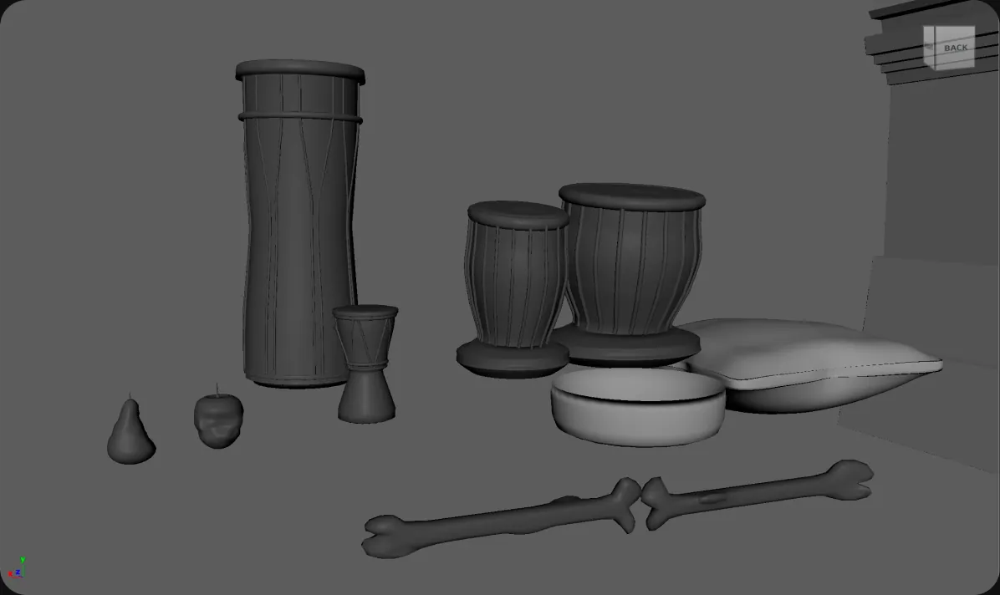
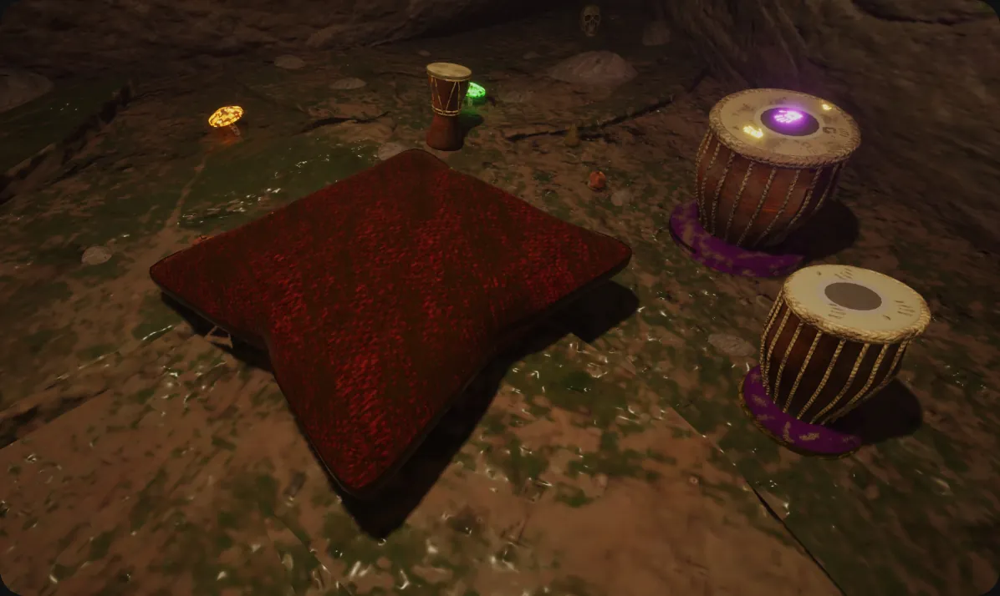
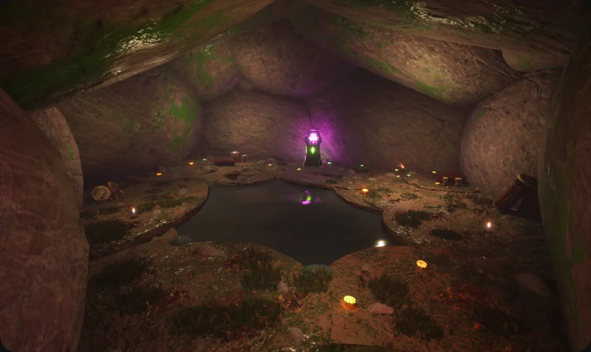

Cave of Papa Bois
Level Designer & 3D Artist
- Software:
- Unreal Engine 5.3 - Maya 2024 - Substance Painter
- Team Size:
- 1
Inspired by folklore, this project was an exploration of atmospheric storytelling through environment design. I managed the full production pipeline from initial grey-boxing to final cinematic rendering, to create a cave environment that balances eerie mystery with material richness.
Creative Pipeline
Architectural Foundation: Developed the scene's flow through initial concept sketches and greyboxing, establishing scale and composition before moving into high-fidelity modeling.
Modeling (Maya): Modeled all environmental assets with a focus on clean topology and efficient UV layouts, ensuring assets were optimized for high-quality displacement without sacrificing performance.
Material Designing: Created surface detail using displacement and emissive maps to create depth and an otherworldly glow. I focused on layering textures to suggest age, moisture, and "folklore" history within the stone and props.
World Building & Lighting: Hand-placed assets to guide the player's eye through the cave. I utilized a layered lighting pass to contrast deep shadows with vibrant emissives, crafting a moody, immersive atmosphere.
Design Insight
Bridging Topology and Texture In Maya
I focused on mastering clean topology and optimized UV layouts. I understood that creating assets with good geometry was about more than just a low polycount; it was also about how the asset works with the UVs for the texturing process. By prioritizing flow, I ensured that displacement maps in Substance Painter could wrap seamlessly, preventing stretching and preserving the material's tactile richness.

Texturing as Narrative
I moved beyond surface-level realism to focus on visual storytelling. By layering displacement and emissive maps, I was able to guide the player's eye toward key narrative elements. Whether it was the subtle erosion on an ancient altar or the glow of a handprint, I learned that roughness variation and emissive placement are powerful tools for defining mood and hierarchy within a dark, complex space.

The Holistic Approach
This project fundamentally changed my workflow. It allowed me to better understand the Art Pipeline, which will help me communicate with members of those teams in the future when developing titles. This mindset allows me to build spaces that are not only performance-optimized for Unreal Engine but are also rich with atmospheric depth and storytelling.

Reflections The mind of a 3D Artist
This project fundamentally elevated my cross-disciplinary workflow. By owning the environment from end to end, I gained a deep, practical understanding of the complete 3D Art Pipeline. As a developer, this hands-on artistic experience allows me to communicate far more effectively with technical artists, modelers, and level designers. It instilled a mindset that helps me build technical frameworks that support performance-optimized spaces without ever compromising their atmospheric depth or storytelling.
Architectural Blockouts
Established spatial flow and player pathing through iterative greyboxing, defining the environment's core scale and visual composition prior to high-fidelity asset production.
Material Storytelling
Layered displacement and emissive maps to create subtle surface details, utilizing roughness variation to establish mood and visual hierarchy in dark spaces.
Cross-Disciplinary Synergy
Learned the 3D art pipeline to bridge the gap between engineering and art, ensuring technical frameworks support atmospheric depth without compromising performance.